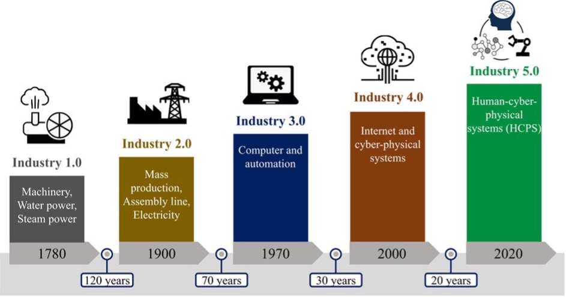

Unit 12: Industry 4.0 and Machine Learning
This unit offers a unique perspective on Industry 4.0 and the integration of machine learning within this transformative era. Industry 4.0, characterised by the fusion of cyber-physical systems, the Internet of Things (IoT), and cloud computing, has revolutionised manufacturing and industrial processes (Tay et al., 2018). Machine learning, as a core component, has enhanced automation, predictive maintenance, and decision-making processes.

Figure 1 : Industrial Revolutions over time(Chen et al., 2021)
However, given the current advancements, we are transitioning into Industry 5.0, which emphasises the collaboration between humans and machines, integrating advanced technologies to create more personalised, human-centric solutions (Chen et al., 2021). In this context, it is essential to review the transition from Industry 4.0 to Industry 5.0, focusing on the legal, social, and ethical concerns that arise.
Transition from Industry 4.0 to Industry 5.0
Industry 5.0 builds upon the foundations laid by Industry 4.0, aiming to balance advanced automation with human creativity and ingenuity. According to Barata and Kayser (2023), this represents a paradigm shift that integrates industry and production with a focus on solving global crises through value orientation.
This transition highlights several key areas of concerns:
Legal Concerns
- Regulatory Frameworks
As technology progresses, regulatory frameworks must also evolve. This involves updating current laws to accommodate new technological advancements and ensuring adherence to safety standards. A prime example is the European Union's (EU) Artificial Intelligence (AI) Act, which aims to regulate the development and use of a significant Industry 5.0 innovation: Generative AI. Much like the General Data Protection Regulation (GDPR), the AI Act is anticipated to establish a foundational framework that could inspire similar regulations tailored to the specific needs of various organizations and countries.
- Intellectual Property
The emergence of collaborative robots (cobots) and AI-driven innovation has brought significant attention to intellectual property rights and the ownership of creations resulting from human-machine collaboration. As these technologies become more prevalent, it becomes crucial to address who holds the rights to inventions and creations developed through such collaborations. Current intellectual property laws may need revisions to clearly define the ownership and rights related to AI-generated works and inventions co-created by humans and machines. This includes determining the extent to which AI contributions are protected and how to attribute ownership between human developers and AI systems. Ensuring that these frameworks are updated will help protect creators' rights and foster innovation in the era of Industry 5.0.
Social Concerns
- Employment Impact:
While Industry 4.0 raised concerns about job displacement due to automation, Industry 5.0 aims to mitigate these issues by promoting human-machine collaboration (Schwab, 2016) . However, this transition necessitates addressing existing skill gaps and ensuring that the workforce receives adequate training. Providing opportunities for continuous learning and skill development is crucial to equip professionals with the necessary competencies to work alongside advanced technologies, thus fostering a more resilient and adaptable workforce.
- Digital Divide:
Ensuring equitable access to advanced technologies remains a significant challenge, particularly in developing regions like Africa. Bridging the digital divide is essential to prevent social inequalities from widening and to foster inclusive economic growth. Matenga and Mpofu believe that (2023) Africa has the potential to leapfrog into Industry 5.0 by utilising Industry 4.0 technologies. Additionally, governments in Africa are investing in Education 4.0 to train the future workforce for digital transformation, equipping individuals with the necessary skills to thrive in a technology-driven environment.
Ethical Concerns
- Data Privacy:
With the increasing connectivity and generation of data, safeguarding personal and sensitive information becomes paramount. Ensuring the ethical use of data involves maintaining transparency in data handling practices and obtaining user consent. It is crucial to implement robust data protection measures to prevent unauthorized access and misuse of information. Legal frameworks such as Kenya’s Data Protection Act (2019) serve as measures to ensure the ethical handling of personal and sensitive data. This Act outlines the responsibilities of data controllers and processors, stipulating strict guidelines on data collection, storage, and sharing. Additionally, organisations must adopt best practices such as data encryption, regular security audits, and implementing comprehensive data governance policies to ensure compliance and build trust with users. The adoption of privacy-enhancing technologies, like anonymization and pseudonymization, can further protect individual privacy while allowing for the beneficial use of data.
- AI Bias and Fairness:
Machine learning algorithms can inadvertently perpetuate biases present in their training data, leading to unfair and discriminatory outcomes. Addressing AI bias and ensuring fairness in AI-driven decision-making processes is a significant ethical concern. It requires a concerted effort to develop and implement strategies for identifying and mitigating biases in data and algorithms. This includes using diverse and representative training datasets, conducting regular audits of AI systems, and establishing guidelines and standards to promote fairness and prevent discrimination (Mehrabi et al., 2021). Transparency in AI processes, including the explainability of decisions made by AI systems, is also crucial.
- Human Autonomy:
As machines and AI systems take on more complex tasks, it is essential to maintain human autonomy and decision-making authority. Preventing over-reliance on automated systems involves ensuring that humans remain in control and can intervene when necessary. This balance can be achieved by designing AI systems that augment rather than replace human capabilities, providing transparency in how decisions are made, and setting clear boundaries for the role of AI in decision-making processes (Wu et al., 2022). Maintaining human oversight is vital to preserve ethical standards and ensure that technology serves humanity's best interests. This can include implementing human-in-the-loop systems, where human judgment is integrated into AI decision-making processes, and developing clear protocols for human intervention in critical situations (Xin et al., 2018). Ensuring that AI technologies are designed and deployed with a focus on enhancing human capabilities rather than replacing them helps maintain a healthy balance between automation and human control.
Professional Concerns
- Skill Development
Professionals need to continuously update their skills to stay relevant in the evolving landscape of Industry 5.0. This includes understanding new technologies, tools, and methodologies introduced by this new industrial era. Ongoing education and training programs are essential to equip professionals with the necessary competencies. Industry-specific certifications, workshops, and online courses can provide opportunities for professionals to learn about advancements in automation, Artificial Intelligence, and data analytics. Moreover, fostering a culture of lifelong learning within organisations can help employees adapt to new technologies and maintain their competitiveness in the job market (Grybauskas, 2024).
- Interdisciplinary Collaboration
The shift towards more integrated human-machine collaboration requires professionals from diverse fields to work together effectively. Fostering interdisciplinary collaboration is crucial for the successful implementation of Industry 5.0 technologies (Longo et al., 2020). This involves encouraging communication and cooperation among engineers, data scientists, IT specialists, and business strategists, among others. Creating cross-functional teams and promoting a collaborative culture can lead to innovative solutions and more efficient problem-solving. Additionally, providing platforms for knowledge sharing and collaborative tools can enhance the synergy between different disciplines, ensuring a holistic approach to technology integration.
- Workplace Dynamics
As humans and machines collaborate more closely, understanding and managing the dynamics of this interaction is vital. This includes addressing concerns around job satisfaction, workplace culture, and the psychological impacts of working alongside advanced technologies. Organisations should focus on creating a supportive work environment that values human contributions and fosters a sense of purpose. This can be achieved by clearly defining roles and responsibilities, providing opportunities for meaningful human input, and ensuring that technology enhances rather than diminishes human work (Grybauskas, 2024). Additionally, addressing the potential stress and anxiety associated with technological changes through employee support programs and open communication can help maintain a positive workplace culture. Ensuring that the integration of advanced technologies leads to improved job satisfaction and a harmonious workplace is essential for the successful adoption of Industry 5.0 innovations.
Conclusion
Understanding the transition from Industry 4.0 to Industry 5.0 involves not only recognising the technological advancements but also addressing the multifaceted legal, social, professional, and ethical concerns that accompany these changes. By proactively engaging with these issues, we can ensure that the integration of machine learning and advanced technologies in Industry 5.0 leads to a more inclusive, fair, and human-centric industrial landscape
References
Chen, X., Eder, M.A., Shihavuddin, A.S.M. & Zheng, D. (2021) A Human‐Cyber‐Physical System toward Intelligent Wind Turbine Operation and Maintenance. Sustainability 13, 561.
Grybauskas, A. (2024) 'Industry 5.0 and Artificial Semi-General Intelligence. Exploring Future Challenges and Opportunities Within Industries and Societies' In: Nousala, S., Metcalf, G., Ing, D. (Eds.), Industry 4.0 to Industry 5.0: Explorations in the Transition from a Techno-Economic to a Socio-Technical Future. Springer Nature Singapore, Singapore, pp. 93–112.
Longo, F., Padovano, A. & Umbrello, S. (2020) Value-Oriented and Ethical Technology Engineering in Industry 5.0: A Human-Centric Perspective for the Design of the Factory of the Future. NATO Adv. Sci. Inst. Ser. E Appl. Sci. 10, 4182.
Matenga, A.E. & Mpofu, K. (2023) Africa and Industry 5.0: Challenges and Opportunities in the Future of Manufacturing. Procedia CIRP 120, 1256–1261.
Mehrabi, N., Morstatter, F., Saxena, N., Lerman, K. & Galstyan, A. (2021) A Survey on Bias and Fairness in Machine Learning. ACM Comput. Surv. 54, 1–35.
Schwab, K., World Economic Forum (2016) The Fourth Industrial Revolution: what it means and how to respond. World Economic Forum. Available from :
https://www.weforum.org/agenda/2016/01/the-fourth-industrial-revolution-what-it-means-and-how-to-respond/ [Accessed 30 May 2024].
Tay, S.I., Chuan L.T., Aziati, A.H.N & Ahmad, A.N.A. (2018). An Overview of Industry 4.0: Definition, Components, and Government Initiatives: Journal of Advanced Research in Dynamical and Control Systems 10(14):14.
The Data Protection Act, (2019)
Wu, X., Xiao, L., Sun, Y., Zhang, J., Ma, T. & He, L. (2022) A survey of human-in-the-loop for machine learning. Future Gener. Comput. Syst. 135, 364–381.
Xin, D., Ma, L., Liu, J., Macke, S., Song, S. & Parameswaran, A. (2018) Accelerating Human-in-the-loop Machine Learning: Challenges and Opportunities. In: Proceedings of the Second Workshop on Data Management for End-To-End Machine Learning, DEEM’18. Association for Computing Machinery, New York, NY, USA, pp. 1–4.